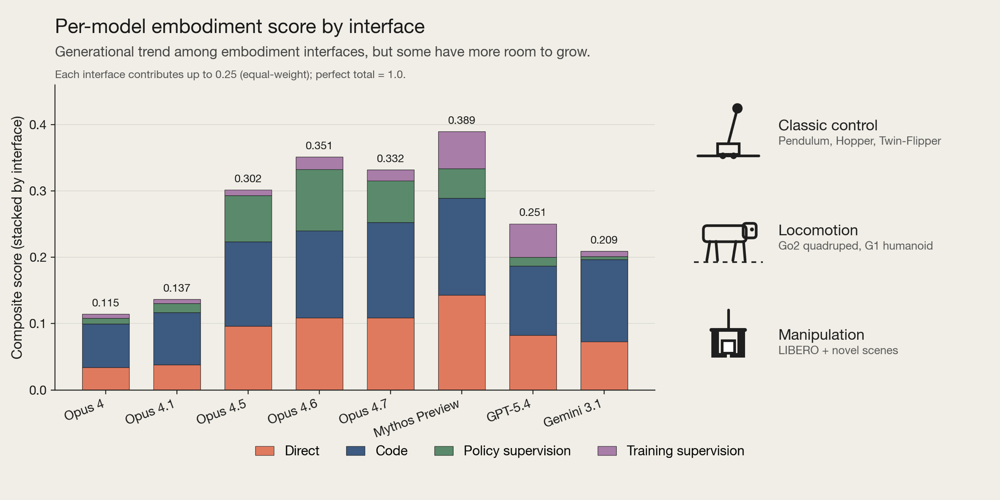
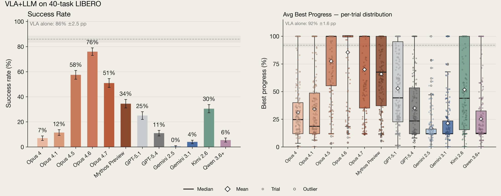
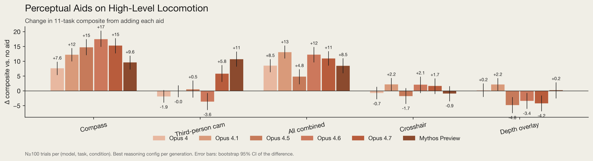
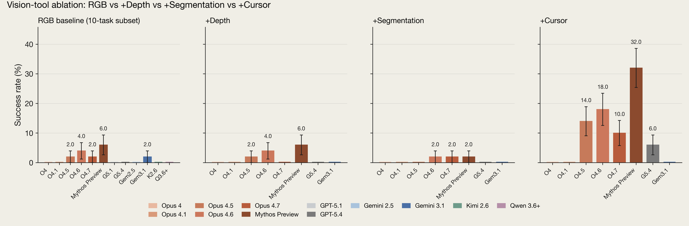
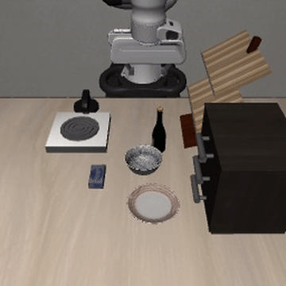
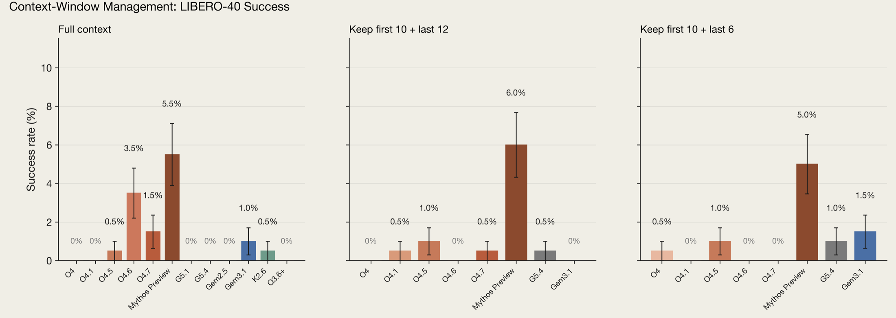
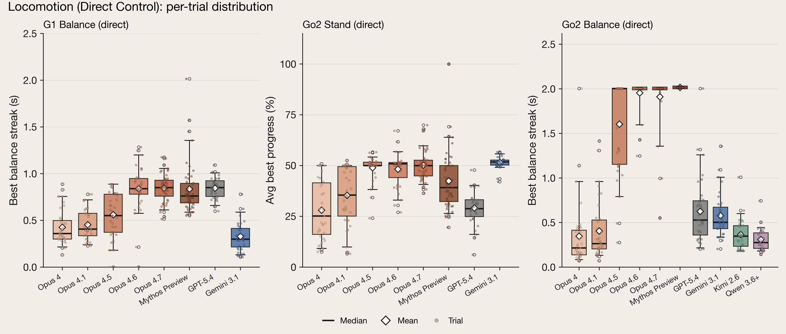
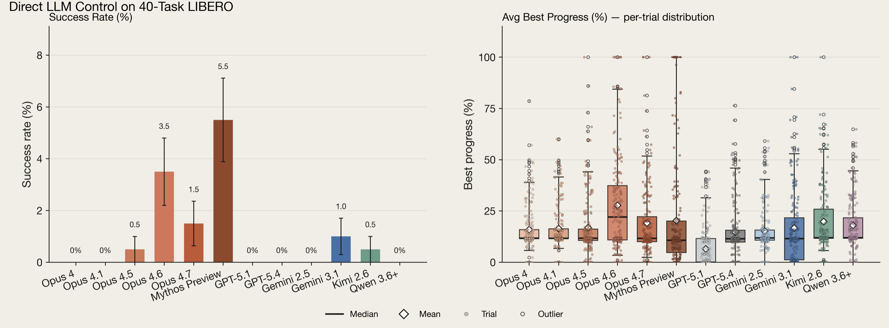
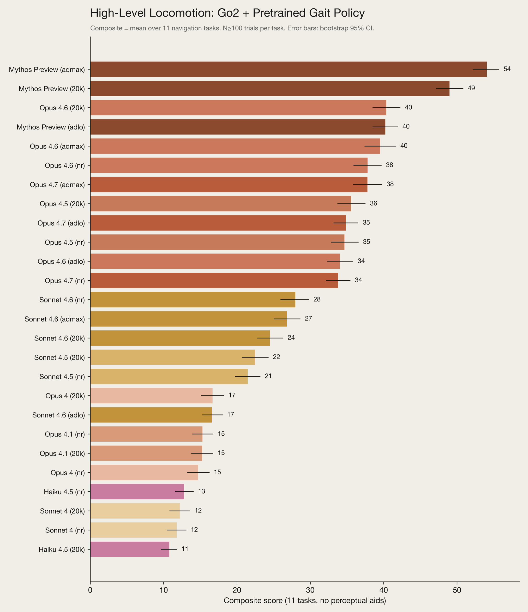

Technical Deep Dive · LLM Robotics · Evaluation
Claude plays robotics：真正决定机器人能力的是模型，还是控制接口？
这不是一个新的 VLA，也没有用机器人数据训练 Claude。Anthropic 构建了 Embody 评测，把多个通用模型接到从 motor torque 到 pretrained policy 的四级接口上。结果说明：今天的 LLM 更适合做低频 planner、controller programmer 和 policy supervisor，而不是高频关节控制器；系统能做什么，取决于模型与接口的乘积。
0. 一句话结论 #
Anthropic 要回答的不是“Claude 会不会端到端控制机器人”，而是“通用模型接入不同机器人接口后，系统能力会放大到什么程度”：直接输出 torque 基本失败，写 controller 或监督预训练 policy 明显更强；代价是能力主要来自 scaffold，低层实时性、长程空间记忆和可靠闭环仍很弱。
核心 insight：机器人能力不是模型的单变量函数。更准确的对象是整个 agentic stack：
其中 $M$ 是 foundation model，$E$ 是 embodiment，$I$ 是 control interface，$O$ 是 observation/tool，$H$ 是 interaction history。换一个接口，同一个模型可以从“完全不会站立”变成“能穿过简单迷宫”。

1. 论文定位：它是系统能力评测，不是机器人模型训练 #
文章横跨三类任务、四种接口和多种本体，比较 12 个模型、5 个 provider。研究对象是通用 VLM 在机器人 scaffold 中的可用性与安全边界。
| 维度 | 设置 | 真正考察的能力 |
|---|---|---|
| Classic control | Pendulum、Hopper、全新 TwinFlipper | 低维动力学、代码控制、reward/policy 设计 |
| Locomotion | 12-DoF Go2、29-DoF G1、11 项导航任务 | 平衡、步态调用、视觉导航、空间记忆 |
| Manipulation | 7-DoF Franka Panda，LIBERO kitchen | 视觉定位、接触/抓取/放置、VLA 监督 |
| Real world | 实体 Unitree Go2 的少量探索 | simulation 结论是否暴露相似失败模式 |
和 VLA benchmark 的差异：常规评测固定 policy 架构与 action space，然后比较训练方法；Embody 刻意改变 action abstraction。它因此更接近 capability audit，但不能回答哪种端到端机器人训练方法更好。
和 agent benchmark 的差异：动作会进入动力学系统，错误会累积、引起接触和失稳；但多数低层仿真实验会在 API 调用时暂停物理时间，所以测到的是 latency-free upper bound。
2. 方法总览：同一个模型，接四种 action interface #
task + robot specification + observation/history
→ general-purpose VLM agent
→ choose one interface
A. direct: action_t / torque_t
B. programmatic: controller(obs) → action
C. RL supervisor: reward + policy net + PPO schedule
D. policy control: velocity command or accept/edit VLA action
→ MuJoCo / physical Go2
→ state, RGB, force feedback, score
→ retry or next action四种接口对应四个时间尺度。direct control 要让语言模型进入 physics loop；programmatic control 让模型一次写出可高频执行的函数；RL supervision 让模型设计学习过程；policy control 则把模型放在低频 semantic loop。
| 接口 | 模型直接输出 | 执行者 | 关键限制 |
|---|---|---|---|
| Direct | torque/force 或 7D end-effector delta | 模拟器/机器人 | 数值精度、带宽、接触稳定性 |
| Programmatic | Python controller | 本地高频函数 | 代码是否形成稳定 feedback law |
| RL supervision | reward、network、schedule | PPO policy | 长迭代链与 reward specification |
| Policy/VLA supervision | 高层速度或 accept/edit/replace | gait policy / MolmoAct | 何时信任、何时纠正专用 policy |
这张接口表就是全文的因果骨架。模型版本的提升很重要，但接口往往产生更大的 effect size。
3. 关键创新点 #
3.1 把 control abstraction 当成第一等评测变量
旧方法为什么不行：只测 torque control 会低估接入成熟 controller 后的风险；只测高层 API 又会把专用 policy 的能力算到 LLM 身上。
它怎么改：在相同任务族中并列 direct、code、RL 和 policy interfaces，并报告跨本体 composite。
为什么有效：它把“模型会什么”和“系统允许模型调用什么”拆开。安全评测由 model card 变成 access-level audit。
代价/限制：不同接口的动作预算、先验和计算资源并不等价，分数不能被解释为纯模型能力。
3.2 让 LLM 监督 VLA，而不是替代 VLA
在 LIBERO 中，MolmoAct 提议 $a_t^{VLA}\in\mathbb{R}^7$，LLM 根据图像、任务和历史决定：
有效机制：VLA 提供局部 visuomotor prior，LLM 负责语义目标、失败识别和 out-of-distribution 判断。
关键负结果：在熟悉的 LIBERO-40 上，所有 LLM+VLA 都差于 MolmoAct 单独运行。更强的 supervisor 也会因为过度 override 破坏正确动作；“不盲从”不等于“会纠错”。

3.3 用小型 orientation tool 暴露 spatial bottleneck
深度图、segmentation、crosshair 或第三视角通常中性甚至有害；直接给 heading 的 compass 却普遍提升 locomotion，可查询物体/距离的 cursor 将 Mythos Preview 在 10-task manipulation subset 的成功率从 6% 提到 32%。
机制：更多像素增加的是高熵观察；heading/cursor 提供的是和控制直接对齐的低熵 state estimate。当前模型缺的常常不是“再看一张图”，而是稳定的坐标系与可校准的几何查询。


3.4 区分短期纠错与长期 embodied learning
新模型的主要收益来自 retry 后改策略，而不是第一次尝试更强。但删除大部分历史通常不降性能，甚至因为 context rot 而上升。简单 one-shot course 能靠少量示例记住特定 sequence；更长路线即使练习 20 次仍全部失败。
结论：这里观测到的是 recent-context adaptation，不是持久 world model、地图记忆或跨 episode policy learning。
4. “训练”与执行流程：Claude 没有做机器人 post-training #
4.1 Direct / programmatic execution
- 固定 prompt template，填入关节数、质量、force limit、observation fields 与任务。
- Direct 模式逐步输出数值动作；code 模式生成
controller(obs) -> action。 - Classic control 与 locomotion 在 LLM 调用时暂停 MuJoCo，再恢复执行。
- Manipulation 不暂停：每个 movement 后返回 RGB 与 gripper force，模型再输出 7D end-effector command。
腿式机器人真实低层循环约需 83 Hz，非 reasoning API 只有约 0.2–0.4 Hz。频率差为：
因此 paused simulation 不是小优化，而是改变了系统因果时间。结果只能回答“如果推理快两个数量级，动作选择是否合理”。
4.2 Model-designed RL
LLM 可定义 reward、最多 200K 参数的 policy network 和 training schedule，再调用 GPU batched MuJoCo 中的 PPO。默认：32 个并行环境、rollout 256、batch 64、4 epochs、$gamma=0.99$、GAE $lambda=0.95$、clip 0.2、learning rate $3\times10^{-4}$、entropy 0.01、value coefficient 0.5、gradient clip 0.5。Classic control 限时 1.5 小时，Go2/G1 限时 4 小时。
这里真正被训练的是小型 PPO policy，不是 Claude。Claude 是 AutoRL designer。
4.3 High-level policy execution
Locomotion:
RGB_t + history + goal
→ LLM → [v_x, v_y, yaw_rate]
→ pretrained gait policy → joint commands
Manipulation:
RGB_t + force_t + instruction + MolmoAct proposal
→ LLM supervisor → accept / edit / replace
→ 7D Panda action → next observation
5. 关键公式与实现对象 #
5.1 闭环 direct control
$c$ 是任务与机器人说明，$h_t$ 是保留在 context 中的交互历史。对 Go2/G1，$a_t$ 可为关节 torque/force；对 Panda，$a_t\in\mathbb{R}^7$ 是 end-effector motion。paused simulation 相当于让 wall-clock latency 不进入 $\mathcal{T}$。
5.2 Programmatic controller
LLM 只在外环生成参数/代码 $phi$，本地函数 $\pi_\phi$ 在内环高频运行。这解释了 programmatic control 为什么通常远胜逐步 token action：语言模型负责 synthesis，不承担 servo bandwidth。
5.3 VLA follow 与 intervention
官方要求完整 7D action 精确相同才算 follow。这个指标能测 override 频率，却不能判断 override 是否正确；需要额外统计 beneficial intervention 与 harmful intervention。
5.4 PPO objective
LLM 决定 reward 与 policy design，train_ppo_batched 执行优化。实验因此混合了“模型能否设计训练问题”和“PPO 在给定预算内能否学会”的效果。
6. 评测与真实部署对齐检查 #
| 项目 | 评测设置 | 真实部署差异 | 影响 |
|---|---|---|---|
| Latency | direct/code 仿真暂停等待 API | physics 与障碍物不会等模型 | 严重高估腿式低层控制可部署性 |
| Observation | 每 turn 1 张 JPEG；历史图全部保留 | 真实系统常用连续视频与 state estimator | 时序运动信息不足，context 快速膨胀 |
| Reset | 平衡尝试间重置；许多模型首试不稳 | 真机跌倒有成本且 initial state 更复杂 | best-of-retries 不等于 robust policy |
| Action | Panda 使用简化 7D end-effector command | 底层 IK、碰撞和伺服器承担部分难度 | “direct”仍不是 raw joint torque |
| Reasoning | provider 间 reasoning mode 不完全等价 | 延迟、token budget 与闭环频率耦合 | 跨模型比较存在 compute confound |
| Memory | 保留 first 10 + recent $N$ turns | 部署需要地图、状态摘要与持久记忆 | 结果只证明短上下文适应 |

【不确定】真实 Go2 的安全层：文章描述研究者会在危险时停止机器人，但未写清 speed cap、collision monitor、emergency stop policy 和 low-level controller 版本。可能是人工遥控急停、厂商 gait safety 或额外 watchdog；需等代码与 hardware protocol 才能验证。
7. 实验复盘：最有价值的是负结果 #
7.1 结果到底说明了什么
- Classic control：新模型主要在后续尝试中拉开差距；写 Python controller 普遍优于让模型自己组织 RL。
- Low-level locomotion：Go2 有有限进展；所有模型都无法让倒地 G1 成功站起。需要约 83 Hz 的系统却由 0.2–0.4 Hz API 做动作选择。
- Direct manipulation：reach、touch、grasp 等 subgoal 在进步，但 full success 最高仅 5.5%。
- High-level locomotion：预训练 gait policy 后能做简单导航；持续定位、遮挡重规划与长 open-loop plan 仍失败。
- VLA supervision：熟悉任务上 supervisor 仍拖累 MolmoAct；MolmoAct 自身失败的 3 个 novel tasks 上，强模型有小幅净增益。
- Reasoning：多数差异在 standard error 内，额外 reasoning 经常无效或负向。反应式控制不是把 thinking budget 调高就能解决。



7.2 公平性与 confound
- 大多数 cell 为 35 trials；LIBERO-40 为 40 tasks × 5 seeds，共 200；high-level locomotion 每条件 100。真实 Go2 只是无法高 N 的 vignette。
- 每个 interface 使用同一 prompt template，没有逐模型调参，这是优点；但 Anthropic Agent SDK、OpenRouter、Gemini adapter 和 reasoning semantics 并不相同。
- TwinFlipper 用来降低 pretraining contamination，但其“模型从未见过”的结论无法被严格验证。
- Composite 是跨任务归一化平均并按 interface 堆叠，而且排除 high-level locomotion；一个总数无法反映 robustness 或 physical risk。
- MolmoAct novel test 只有 3 tasks × 12 seeds。它适合说明趋势，不足以证明通用 OOD correction。
7.3 真机证据
实体 Go2 的失败很具体：把玻璃门中的目标反射当成真实目标、误判垃圾桶与 crosshair 的相对位置、在走廊转弯时错误相信自己已经完成转向。所有模型都没能仅靠视觉绕办公室一圈。这些案例支持“state estimation 与 spatial memory 是瓶颈”，但没有统计功效，不能用于模型排名。
8. 可复现清单 #
| 模块 | 已披露 | 仍缺失/风险 |
|---|---|---|
| Models | 12 models、provider、adapter 与 reasoning 设置 | API snapshot、temperature、完整 decoding 参数 |
| Prompts | 固定 template，填 robot/task fields | 完整 system prompt 尚需代码仓库 |
| Trials | 35/50/200/36/100 等 cell counts | seed list、failure retry 和 timeout 细则 |
| Simulation | MuJoCo、OSMesa、CPU/GPU 资源 | MuJoCo version、XML、controller gains |
| RL | PPO defaults、32 envs、200K policy cap | reward templates、model-generated architecture 记录 |
| Vision | 每 turn 1 JPEG、prior frames retained、tool flags | resolution、JPEG quality、camera intrinsics/extrinsics |
| Metrics | 正文描述 success/progress/composite | METRICS.md 尚不可访问 |
| Commands | 计划发布 EXPERIMENTS.md | 仓库截至 2026-07-23 仍为 404 |
复现顺序：先做 Pendulum direct/code 验证 adapter 与 pause 语义；再做 TwinFlipper 检查 retry learning；然后复现 LIBERO direct 与 MolmoAct-only baseline；最后加入 supervisor，分别统计 follow、beneficial override、harmful override。不要先追 composite。
【不确定】模型可用性：Claude Mythos Preview、Opus 4.7 等版本是否对外提供固定 snapshot、能否长期复现，原文没有保证。可选做法是保存完整 API response、model identifier 与日期，或在代码发布后使用作者缓存的 trajectory。
9. 可能的改进方向 #
| 改动点 | 预期收益 | 风险 | 验证实验 |
|---|---|---|---|
| LLM 输出 subgoal，MPC/VLA 高频执行 | 匹配模型与控制时间尺度 | subgoal 不可达或语义漂移 | 固定底层 policy，对比 torque、velocity、subgoal 三层接口 |
| 显式 pose/map belief state | 改善 return_home、maze、drift detection | state estimator 错误会被模型过度信任 | oracle pose、learned pose、纯 RGB 三组消融 |
| 训练 selective VLA intervention head | 减少熟悉任务上的 harmful override | 可能退化为永远 defer | 分别报告 coverage、risk、beneficial/harmful intervention |
| episode memory 压缩为 state/event graph | 减少 context rot，保留失败因果 | 摘要丢掉接触细节 | full context、recent window、learned memory 对比 |
| 异步双环架构 | 低层 50–500 Hz，LLM 0.1–2 Hz 仍可部署 | 高层命令滞后 | 引入真实 wall-clock 与动态障碍，测 deadline miss |
| 真机安全 capability envelope | 把 access level 纳入部署许可 | 限制过强导致任务无法完成 | 按区域、对象、速度、力矩逐级开放并测风险事件 |
可迁移设计：不要把 LLM 当作另一个 action head。先决定它应该控制哪一个 abstraction level，再设计 observation contract、intervention policy 与 safety boundary。
10. 速读备忘卡 #
- 这是一套 Embody capability benchmark，不是新 VLA。
- Claude 没做机器人 post-training；PPO policy 才被现场训练。
- 四种接口是 direct、programmatic、RL supervision、policy control。
- 同一模型的表现高度依赖 robot body 与 action abstraction。
- 腿式低层控制需约 83 Hz，API 仅约 0.2–0.4 Hz。
- 暂停仿真给出 latency-free upper bound，不代表可实时部署。
- Panda direct action 是 7D end-effector command，不是 raw torque。
- Direct LIBERO full success 只有 0–5.5%，subgoal progress 更明显。
- MolmoAct 大幅增能，但熟悉任务上 LLM supervisor 仍会拖累它。
- Compass 与 cursor 比 depth/segmentation overlay 更有效。
- 额外 reasoning 多数无显著收益，有时妨碍反应式控制。
- 模型能从最近失败中调整，但没有可靠长期 spatial memory。
- 实体 Go2 实验暴露反射、障碍误判和自定位失败。
- 评测机器人 agent 时，access level 必须与 model 一起报告。
- 截至 2026-07-23，承诺的 Embody 公开仓库仍未上线。
一句话记忆：Claude 现在更像机器人系统的低频认知层，不是高频控制层；机器人能力的开关在 interface。